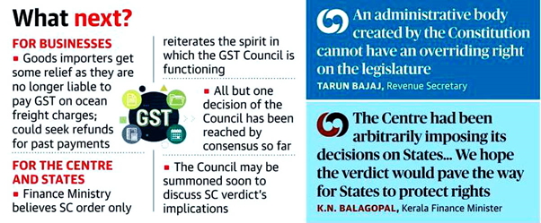

Supreme Court
Supreme Court Judgement on Power of GST Council Recommendations
Relevant to Taxation Team of Mahindra Businesses
Recently, the Supreme Court in a judgment championing the importance of “Cooperative Federalism” for the well-being of democracy, held that Union and State legislatures have “equal, simultaneous and unique powers” to make laws on Goods and Services Tax (GST) and the recommendations of the GST Council are not binding on them.
The apex court’s decision came while confirming a Gujarat High Court ruling that the Centre cannot levy Integrated Goods and Services Tax (IGST) on ocean freight from Indian importers.
The Supreme Court has held that GST on ocean freight paid in case of import of goods is unconstitutional.
Key Observations of the Supreme Court
-
A bench led by Justice DY Chandrachud held that the Parliament intended that the recommendations of the GST Council will have persuasive value. GST Council Recommendations Not Binding on Centre & States. Both Parliament & State Legislatures Can Legislate On GST
-
Centre and the States are “autonomous, independent and even competing units” while making GST laws. Cooperative federalism is treated like a marble cake federalism due to the integrated approach of the federal units.
-
The recommendations of the GST Council are the product of a collaborative dialogue involving the Union and the states. They are recommendatory in nature.
-
The 'recommendations' of the GST Council are the product of a collaborative dialogue involving the Union and States. They are recommendatory in nature. To regard them as binding edicts would disrupt fiscal federalism, where both the Union and the States are conferred equal power to legislate on GST.
-
The recommendations only have a persuasive value. To regard them as binding would disrupt fiscal federalism when both the Union and the states are conferred equal power to legislate on GST.
-
It is not imperative that one of the federal units must always possess a higher share in the power for the federal units to make decisions. Indian federalism is a dialogue between cooperative and uncooperative federalism where the federal units are at liberty to use different means of persuasion ranging from collaboration to contestation.
-
Emphasized that Article 246A (which gives the States power to make laws with respect to GST) of the Constitution treats the Union and the States as “equal units”.
-
- It confers simultaneous power (on Union and States) for enacting laws on GST.
-
- Article 279A, in constituting the GST Council, envisions that neither the Centre nor the states are actually dependent on the other.
-
There are no provisions in the Goods and Service Tax Act, 2017 (GST Act) that deal with situations where there is repugnancy between the laws drawn up by the Centre and states, and it is for the GST Council to advise them suitably whenever such occasions arise.
-
There would have been express provision in Constitution if GST Council recommendations were meant to be binding. If the GST Council were intended to be a constitutional body whose recommendations transform into legislation without any intervening act, there would have been an express provision in Article 246A. Article 279A does not mandate tabling the recommendations in the legislature like the provisions in category 3, where the recommendations have to be mandatorily tabled in the legislature along with an explanatory note. Only the secondary legislation which is framed based on the recommendations of the Council under the provisions of the CGST Act and IGST Act is mandated to be tabled before the Houses of the Parliament. The use of the phrase 'recommendations to the Union or States' indicates that the GST Council is a recommendatory body aiding the Government in enacting legislation on GST.
GST Council has Unequal Voting Structure
-
The Court noted that the recommendations of the GST Council are not based on a unanimous decision but on a three-fourth majority of the members present and voting, where the Union's vote counts as one-third, while the States' votes have a weightage of two-thirds of the total votes cast.
-
There are two significant attributions of the voting system in the GST Council. First, the GST Council has an unequal voting structure, where the States collectively have a two-third voting share and the Union has a one-third voting share; and second, since India has a multi-party system, it is possible that the party in power at the Centre may or may not be in power in various States. Therefore, the GST Council is not only an avenue for the exercise of cooperative federalism but also for "political contestation" across party lines.
-
The Centre has a one-third vote share in the GST Council. This coupled with the absence of the repugnancy provision in Article 246A indicates that recommendations of the GST Council cannot be binding.
Uncooperative Federalism
-
The judgment also discussed the concept of "uncooperative federalism", whereby States can use various forms of contestations within the Constitutional framework.
-
'Uncooperative federalism' is valuable since "it is desirable to have some level of friction, some amount of state contestation, some deliberation-generating froth in our democratic system", Justice Chandrachud said quoting Jessica Bulman and Heather K.
-
"When the federal units are vested with unequal power, the collaboration between them is not necessarily cooperative. Harmonised decision thrives not just on cooperation but also on contestation. Indian federalism is a dialogue in which the States and the Centre constantly engage in conversations.
-
The States can use various forms of contestation if they disagree with the decision of the Centre. Such forms of contestation are also within the framework of Indian federalism"
Industry Reactions
|
Abhishek A. Rastogi, partner at Khaitan & Co
|
-
This judgment may change the landscape of those provisions under GST which are subject to judicial review
-
As the court has gone ahead to categorically hold that the GST Council recommendations have only persuasive value, there will be pragmatic approach to the provisions which are subject to judicial review by way of challenge to the constitutionality of such provisions based on GST Council recommendations
|
|
Vivek Jalan, partner, Tax Connect Advisory Services
|
-
Generally, the value of imported goods includes the Cost, Insurance and Freight components and Customs Duty and GST are levied on that value
-
However, the Central Board of Indirect Taxes and Customs also sought to levy GST at 5% on the value of imported goods considering 10% of the value of imported goods as deemed ocean freight. This meant a levy of 0.5% GST on the value of imported goods as services, along with Customs duty and GST itself which is around 28% and is charged as goods
|
Way Forward

The judgment may change the landscape of those provisions under GST which are subject to judicial review. As the court has gone ahead to categorically hold that the GST Council recommendations have only persuasive value, there will be a pragmatic approach to the provisions which are subject to judicial review by way of challenge to the constitutionality of such provisions based on GST Council recommendations.
With this ruling, the court emphasised unequal voting structure of GST council and uncooperative federalism. Its interpretation of the recommendation of the GST council as non-binding on union and states is an attempt to protect the federal structure of our system.